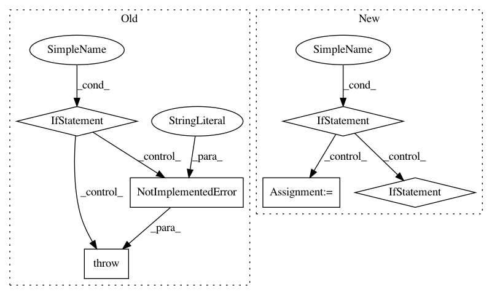

451b2f16acd7dcc8a38cddeff9383143184906fc,cirq/circuits/circuit_operation.py,CircuitOperation,repeat,#CircuitOperation#,207
Before Change
// As CircuitOperation is immutable, this can safely return the original.
return self
repetitions = int(repetitions)
if protocols.is_measurement(self.circuit):
raise NotImplementedError("Loops over measurements are not supported.")
return self.replace(repetitions=self.repetitions * repetitions)
def __pow__(self, power: int) -> "CircuitOperation":
return self.repeat(power)
After Change
// The eventual number of repetitions of the returned CircuitOperation.
final_repetitions = self.repetitions * repetitions
if repetition_ids is None:
repetition_ids = default_repetition_ids(expected_repetition_id_length)
elif len(repetition_ids) != expected_repetition_id_length:
raise ValueError(
f"Expected repetition_ids={repetition_ids} length to be "
f"{expected_repetition_id_length}"
)
// If `self.repetition_ids` is None, this will just return `repetition_ids`.
repetition_ids = cartesian_product_of_string_lists(repetition_ids, self.repetition_ids)
return self.replace(repetitions=final_repetitions, repetition_ids=repetition_ids)
In pattern: SUPERPATTERN
Frequency: 3
Non-data size: 6
Instances
Project Name: quantumlib/Cirq
Commit Name: 451b2f16acd7dcc8a38cddeff9383143184906fc
Time: 2021-02-08
Author: smitsanghavi@users.noreply.github.com
File Name: cirq/circuits/circuit_operation.py
Class Name: CircuitOperation
Method Name: repeat
Project Name: scikit-learn/scikit-learn
Commit Name: 670b85c9e9cec05210e8596bc1fb9ca66787162f
Time: 2020-04-19
Author: 50599110+lrjball@users.noreply.github.com
File Name: sklearn/compose/_column_transformer.py
Class Name: ColumnTransformer
Method Name: get_feature_names
Project Name: pymanopt/pymanopt
Commit Name: b6396da5697e1bdfc7327d785cf3418cc4016d3b
Time: 2016-02-22
Author: git@sweichwald.de
File Name: pymanopt/tools/autodiff/_autograd.py
Class Name: AutogradBackend
Method Name: compute_hessian